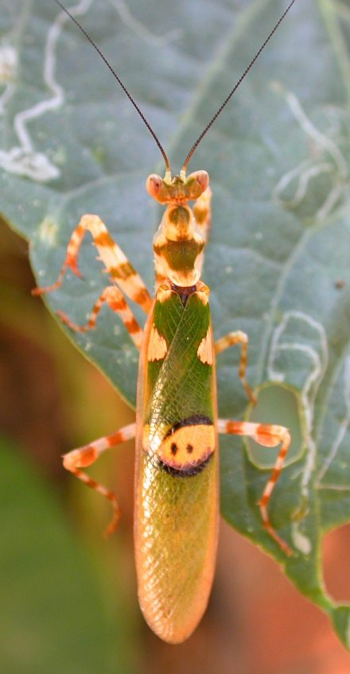

जूल्ड फ्लावर मैंटिसJeweled Flower Mantis
Creobroter gemmatus · Hymenopodidae · INS-0293

- Scientific name वैज्ञानिक नाम
- Creobroter gemmatus Saussure, 1869
- Family कुल
- Hymenopodidae
- Hindi हिंदी
- जूल्ड फ्लावर मैंटिस
- Local names स्थानीय नाम
- jeweled flower mantis
- Status here यहाँ की स्थिति
- native
- Movement आवागमन
- Resident, here all year
- Known from कहाँ दर्ज
- Others have published records from the wider Awadh–Purvanchal plain, none yet from Basti–Ayodhya अवध–पूर्वांचल से दूसरों के प्रकाशित अभिलेख, बस्ती–अयोध्या से अभी नहीं
- IUCN IUCN
- not evaluated
- Review समीक्षा
- not yet reviewed
When to look कब देखें
Expected mainly in April, May, June, July, August, September, October. मुख्यतः अप्रैल, मई, जून, जुलाई, अगस्त, सितंबर, अक्टूबर में अपेक्षित।
Uses and possibilities उपयोग और संभावनाएँ
Drawn from the documented uses in the profile below, where each is labelled traditional, current or a research lead. All uses →
Tell it apart from इनसे अलग पहचानें
जूल्ड फ्लावर मैंटिस / Jeweled Flower Mantis
Creobroter gemmatus Saussure, 1869 — Hymenopodidae
जूल्ड फ्लावर मैंटिस — फूलों पर घात लगाकर बैठने वाला एक सुंदर छोटा मैंटिस, जिसके पंखों पर पीले और काले रंग का चमकीला आँख जैसा निशान होता है।
Quick Identification त्वरित पहचान
| Feature | Description |
|---|---|
| Coloration | Creamy white, pale emerald green, and soft pinkish tones |
| Forewings (Tegmina) | Leaf-green with large circular bright yellow eye-spot ringed in black |
| Eye-spot | Yellow disc with two central dark black dots, resembling a jewel |
| Hind wings | Membranous, washed with bright reddish-pink or purplish flush |
| Forelegs | Spiny, raptorial, armed with sharp interlocking spines for grabbing prey |
| Head | Triangular, highly mobile, bearing large protruding hemispherical eyes |
Field tip: Look on flowering bushes for a small green-and-white mantis; when disturbed, it flashes wings to reveal a stunning circular yellow-and-black eye-spot.
हिंदी: पंखों पर पीले और काले रंग का गोल गहने जैसा आँख का निशान और गुलाबी पिछले पंख इस छोटे मैंटिस की मुख्य पहचान हैं।
Morphology आकारिकी
Measurement not available in consulted sources.
A small, exquisite flower mantis exhibiting sophisticated morphological adaptations for floral mimicry and deimatic defense. The head is triangular, wider than long, freely movable on a slender neck, and crowned by a small tubercle between the antennae. The compound eyes are large, hemispherical, and protruding, providing an expansive binocular visual field; antennae are filiform and relatively short.
The prothorax is relatively short and compact compared to elongate mantids, with denticulate lateral margins and a dilated supra-coxal expansion. The raptorial forelegs are well developed: the fore-coxae are denticulate, the fore-femora are compressed and equipped with rows of sharp discoidal and marginal spines, and the curved fore-tibiae fold tightly like a clasp knife against the femur to secure struggling prey.
The forewings (tegmina) are pale leaf-green or creamy green with sub-hyaline margins; each tegmen features a conspicuous, circular, jewel-like eye-spot consisting of a central yellow zone containing two dark black spots, enclosed by a sharp black ring and outer pale halo. The hind wings are broad, membranous, and washed with brilliant pinkish-rose or purplish-crimson across the basal area, contrasting with a smoky outer margin (Béthoux 2010).
हिंदी: इसका शरीर छोटा और हरा-सफेद होता है। सिर त्रिकोणीय, आगे के पैर कांटेदार व शिकार पकड़ने वाले और पंखों पर बड़ा गोल आंख जैसा धब्बा होता है।
Behaviour & Ecology व्यवहार और पारिस्थितिकी
Creobroter gemmatus is a quintessential flower-mimicking ambush predator. It perches motionless among blossoms, flower buds, and young leaves, blending cryptically with floral structures. When a flower visitor approaches, the mantis tracks it with smooth head movements, slowly shifts position, and strikes with lightning speed using its raptorial forelegs.
If discovered by a potential predator such as a bird or lizard, the mantis performs a spectacular deimatic display: it rears up on its hind legs, spreads its tegmina widely to expose the startling jeweled eye-spots, unfurls its bright pink hind wings, and rustles them together to produce a faint hissing sound (Yager 1996; Béthoux 2010). This sudden visual flash creates the illusion of a much larger, dangerous face, causing the attacker to hesitate and allowing the mantis to drop into cover.
हिंदी: यह फूलों के बीच छिपकर बैठता है और आने वाली मक्खियों व तितलियों को झपटता है। खतरा देखकर यह पंख फैलाकर नकली आंखें दिखाता है।
Life Cycle / Phenology जीवन चक्र
Mating takes place on foliage during warm monsoon months. Courtship is cautious; the male approaches the female from behind with slow, hesitant movements to avoid being cannibalized. Copulation lasts several hours.
The female produces several small, rounded, light brown frothy oothecae attached to twigs, stems, or under broad leaves. The frothy secretion hardens into a tough protective sponge. Nymphs hatch within a few weeks. Early instar nymphs mimic small predatory ants, displaying black bodies with reddish markings. As they molt through successive nymphal stages, they develop green-and-white floral coloration and distinct wing buds.
हिंदी: मादा टहनियों पर अंडों की सुरक्षित थैली बनाती है। इसके छोटे बच्चे चींटियों जैसे दिखते हैं और बड़े होकर फूलों जैसे रंग अपना लेते हैं।
Host Plants or Prey आहार
Carnivorous ambush predator specializing in floral visitors. Prey consists of small flower-visiting insects, including flies, bees, wasps, and small moths visiting blossoming garden shrubs and orchard trees.
हिंदी: यह पूरी तरह मांसाहारी है और फूलों का रस पीने आने वाले छोटे कीटों जैसे मक्खियों और पतंगों को खाता है।
Predators / Natural Enemies शत्रु
Despite its startling threat display, the mantis is hunted by insectivorous birds, including bulbuls, drongos, and shrikes. Larger jumping spiders, garden lizards (Calotes versicolor), and larger mantids also prey upon nymphs and adults. Oothecae are attacked by parasitic chalcidoid wasps.
हिंदी: बड़े पक्षी, गिरगिट और बड़ी मकड़ियां इसे खा जाते हैं। अंडों की थैलियों पर परजीवी छोटी ततैयों का हमला होता है।
Agricultural / Human Relevance कृषि प्रासंगिकता
Creobroter gemmatus is an entirely beneficial generalist predator in gardens, orchards, and agroforestry systems. By consuming pest flies, moths, and caterpillars, it assists in natural biological control. It is harmless to humans and popular among macro photographers for its striking colors and charismatic threat posture.
हिंदी: यह बगीचों में हानिकारक कीटों को नियंत्रित करने वाला एक मित्र कीट है। यह इंसानों को कोई नुकसान नहीं पहुंचाता।
Expected Locally स्थानीय रूप से अपेक्षित
Not a field record. Written from published accounts for eastern Uttar Pradesh. No confirmed local sighting yet — if you have seen it, that is what the atlas needs.
अभी तक स्थानीय पुष्टि नहीं। यह विवरण प्रकाशित स्रोतों से है, किसी अवलोकन से नहीं।
GBIF holds published records from the wider Awadh–Purvanchal plain, none yet from Basti–Ayodhya. Expected on flowering garden shrubs, orchard borders, and roadside thickets across the district during late monsoon months (August to October). Inspect blossoming bushes such as duranta, lantana, and hibiscus; look for a small green mantis resting among petals. A first record would be a photograph of the adult with place and date, sent through the About page.
Distribution वितरण
Global range: South and Southeast Asia, including India, Nepal, Bhutan, Myanmar, Thailand, Laos, Vietnam, and southern China.
In India: Recorded from forested and sub-Himalayan regions, the northeastern states, and agricultural plains of northern and eastern India.
In Uttar Pradesh: Documented from terai forest edges and rural garden habitats in eastern Uttar Pradesh.
In Basti district / eastern UP: Expected in fruit orchards, homestead flower gardens, and scrubby canal edges across the district.
हिंदी: यह भारत, नेपाल और दक्षिण-पूर्व एशिया में पाया जाता है। उत्तर प्रदेश के तराई और बागानी क्षेत्रों में इसकी मौजूदगी है।
Research Questions शोध प्रश्न
- What flower species are preferentially chosen as ambush perches by Creobroter gemmatus in eastern UP agroecosystems?
- How effective is the deimatic eye-spot display in deterring local insectivorous birds like the black drongo?
- What percentage of the adult diet comprises beneficial honey bees versus pestiferous dipterans and lepidopterans?
- क्या बस्ती जनपद के आम के बागानों में यह मैंटिस हानिकारक कीटों को नियंत्रित करने में सहायक है?
- क्या इसके अंडों पर स्थानीय परजीवी ततैयों का भारी असर पड़ता है?
Similar Species मिलती-जुलती प्रजातियाँ
| Species | Key Difference | हिंदी | |
|---|---|---|---|
| Hierodula membranacea ([[praying_mantis | Praying Mantis]]) | Much larger, uniformly green; lacking eye-spots on forewings and pink hind wings | बड़ा हरा मैंटिस |
| Schizocephala bicornis ([[stick_mantis | Stick Mantis]]) | Extremely slender, stick-like straw-brown body; elongated prothorax; lives in tall dry grass | डंडी मैंटिस |
| Gongylus gongylodes (Wandering Violin Mantis) | Body with bizarre violin-like expansions; extreme leaf-mimic; prothorax extremely elongated | वायलिन मैंटिस |
Field rule: Small green-and-white flower mantis with a prominent circular yellow-and-black jewel eye-spot on each forewing = Creobroter gemmatus.
Taxonomy & Classification वर्गीकरण
Original description. Described by Henri de Saussure (1869) in Mitteilungen der Schweizerischen Entomologischen Gesellschaft, 3. The generic name Creobroter comes from ancient Greek meaning meat-eater, while gemmatus is Latin for jeweled or budded, alluding to the bright gem-like eye-spot on the forewings.
Subspecies. Monotypic — no subspecies are currently recognized.
Family and order placement. Order Mantodea, family Hymenopodidae (flower mantises), subfamily Hymenopodinae.
IUCN status rationale. Not evaluated. Widespread across South and Southeast Asia; maintains stable populations in undisturbed and semi-agricultural habitats.
हिंदी: इसे 1869 में सॉस्योर ने वर्णित किया था। यह हाइमेनोपोडिडी परिवार का सदस्य है जिसे फ्लॉवर मैंटिस कहा जाता है।
Photo Gallery फोटो गैलरी
No photos yet — add field photos to media/species/jeweled_flower_mantis/ and run node scripts/sync_photos.js.
Photos needed आवश्यक फोटो
- [ ] Adult perched on flower showing cryptic green and creamy markings (फूल पर बैठे मैंटिस की तस्वीर)
- [ ] Threat display showing spread wings with jeweled eye-spots and pink hind wings (पंख फैलाए मैंटिस की तस्वीर)
References संदर्भ
- Saussure, H. de (1869). Essai d'un système des Mantides. Mitteilungen der Schweizerischen Entomologischen Gesellschaft, 3.
- Béthoux, O. (2010). Alteration of sex-related developmental modules: A case of "feminized" male wing morphology in Creobroter gemmatus (Mantodea: Hymenopodidae). European Journal of Entomology, 107(1), pp. 133–135. doi:10.14411/eje.2010.018
- Yager, D. D. (1996). Serially homologous ears perform frequency range fractionation in the praying mantis, Creobroter (Mantodea, Hymenopodidae). Journal of Comparative Physiology A, 178(4), pp. 463–475. doi:10.1007/bf00190177
- GBIF Occurrence Data — Creobroter gemmatus, India (2025).
Source file: species/fauna/insects/jeweled_flower_mantis.md